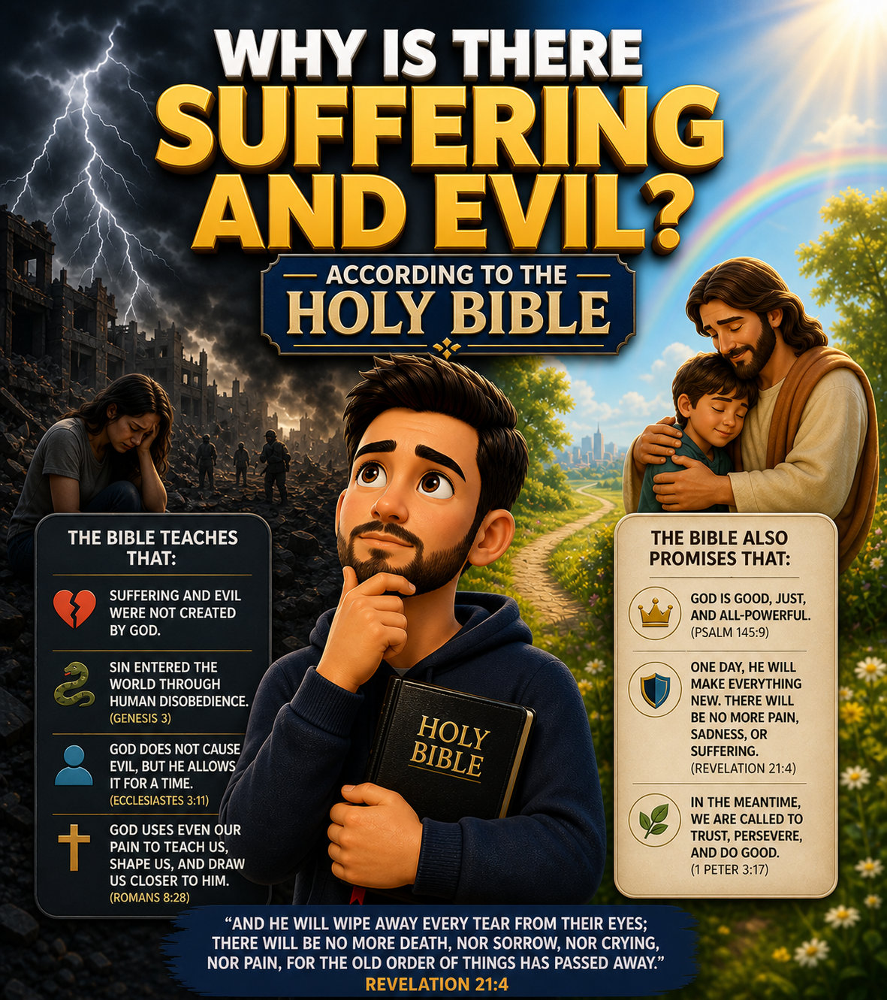

The Bible recognizes that the world contains suffering, pain, and evil. However, it does not present these as part of God's original plan, but as the result of the human condition and the broken relationship with God.
Simply put: suffering exists because something went wrong in the relationship between humanity, God, and creation.
The Bible states that God's creation was originally good.
"And God saw everything that He had made, and behold, it was very good." (Genesis 1:31)
Evil and suffering were not part of God's original plan.
According to the Bible, suffering began when humanity chose to disobey God.
"Sin entered the world through one man, and death through sin." (Romans 5:12)
This disobedience marks the beginning of the separation between God and humanity.
Sin affects not only individuals, but all creation.
"The creation was subjected to futility." (Romans 8:20)
This brought pain, conflict, and imperfection into the world.
Even though evil exists, God has not abandoned the world.
"The Lord is near to the brokenhearted." (Psalm 34:18)
God remains present even in difficult situations.
The Bible teaches that God can use difficult situations to produce good.
"All things work together for good to those who love God." (Romans 8:28)
Suffering is not good in itself, but it can be used by God for a greater purpose.
The Bible points to a future without pain or suffering.
"And God will wipe away every tear from their eyes; there shall be no more death, nor sorrow, nor crying, nor pain." (Revelation 21:4)
Suffering will one day come to a complete end.
According to the Bible, the world was created good, but evil entered through human sin and affected all creation. God remains present, can bring purpose through suffering, and promises a future without pain.